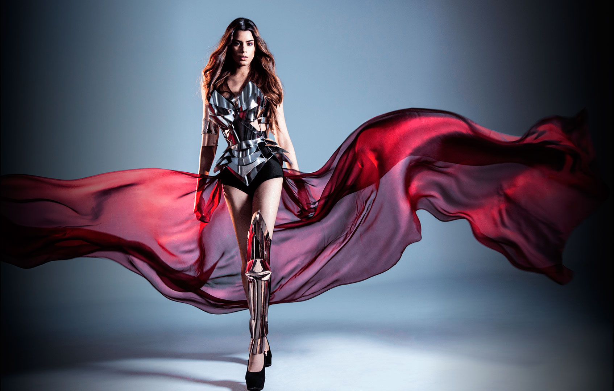

Fotografía de moda

La fotografía de moda nos inunda todos los días, presente en prensa, revista, redes sociales, escaparates, y es tan importante que se separó de su padre que era la fotografía publicitaria, no se trata sólo de publicitar la ropa, sino también se está publicitando el conjunto, los complementos, el fotografo, el modelo y el maquillaje y peluquería
cuál es el objetivo principal? esto mueve grandes cantidades de dinero.
el fin comercial es que el mensaje perdure en el tiempo, más o menos como los anuncios publicitarios pegadizos
la originalidad formará parte importante de la composición un factor importante es la iluminación
Fotografos importantes
- Annie Leibovitz
- David LaChapelle
- Oliviero Toscani
- Eugenio Recuenco
Subtipos
- Street style: mezclada con la fotografía documental, la diferencia con a convencional, se hace en el exterior, no se usan flashes y deben de coger al modelo en situaciones normales, en principio no pueden ser retocadas, y tuvo augen con la fashion week de Paris o Madrid. Parámetros: coger la velocidad alta para doger los microgestos; el Diafragma,
- Fotografía de Backstage: Suele ser la más creativa de todas ya que el fotografo tiene libertad para moverse: desde reflejo, tridimensionalidad; se trata de expresar la naturalidad antes de los desfiles.
- Fotografía de desfile: Es conocida por captar el moment de una colección de moda, son momentos únicos que van a quedar inmortalizados, no debe tener retoque,
Fotografos importantes
- Bill Cunningham
- Bryan Green
- Javier Burgos